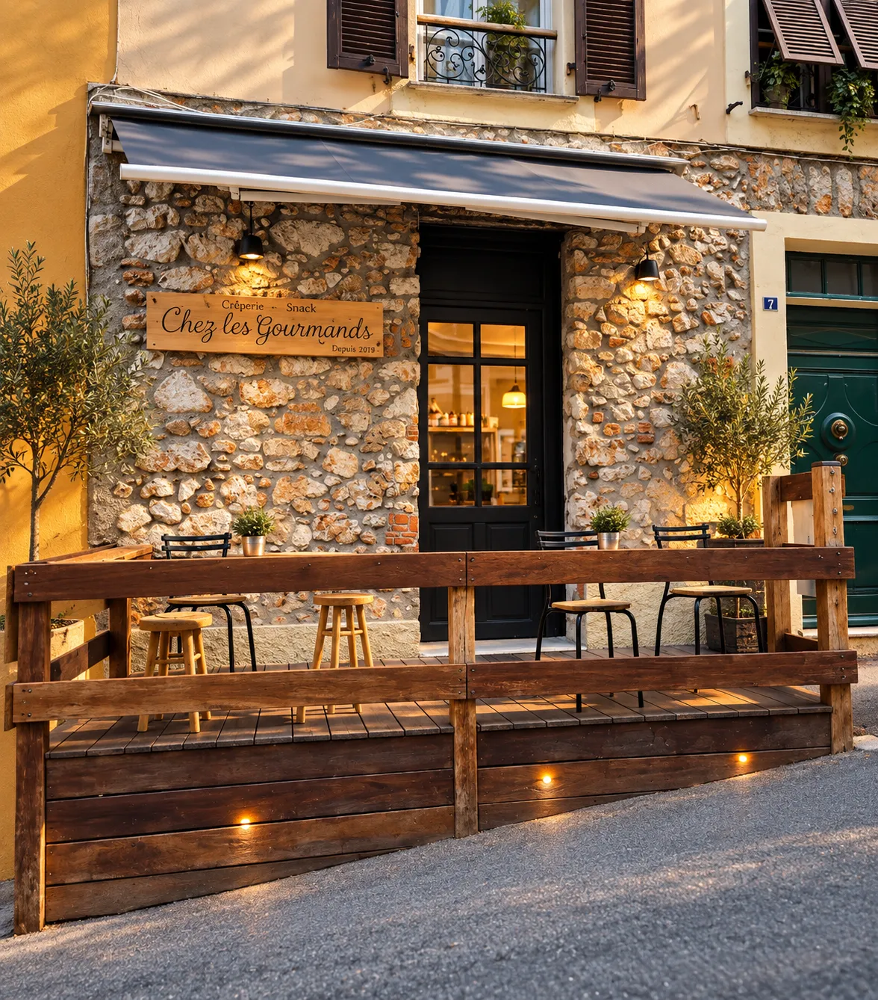

Villefranche-sur-Mer
Chez les Gourmands
Une crêperie chaleureuse au cœur de Villefranche-sur-Mer, pour une pause gourmande et sans façon, salée ou sucrée.
Lundi – samedi : 7 h 30 – 18 h · Dimanche : fermé

Notre maison
Une adresse simple et accueillante
À deux pas du port, Chez les Gourmands vous accueille dans un cadre sobre et lumineux, pensé pour les pauses gourmandes en toute simplicité — un café, une galette, une crêpe partagée entre amis.
Ici, pas de chichis : de bons produits, un service attentionné et l’art tout simple de bien recevoir, à quelques ruelles de la mer.
Découvrir le restaurant →L’expérience
L’atmosphère Chez les Gourmands
Un cadre chaleureux
Une salle sobre et lumineuse, pensée pour prendre son temps, seul, entre amis ou en famille.
Galettes & crêpes
Une carte généreuse, salée et sucrée, pour composer son repas ou sa pause selon l’envie.
Ouvert en journée
Du lundi au samedi, de 7 h 30 à 18 h, pour un petit-déjeuner, un déjeuner ou un goûter.
La carte
Quelques gourmandises
Un aperçu de la carte — galettes, crêpes et boissons fraîches. Retrouvez l’intégralité des propositions, prix et compositions sur la page dédiée.
Infos pratiques